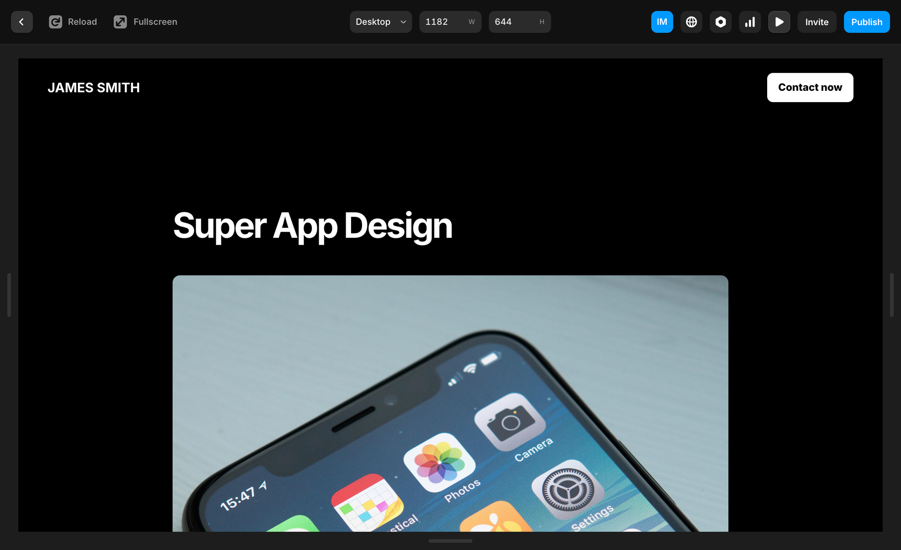
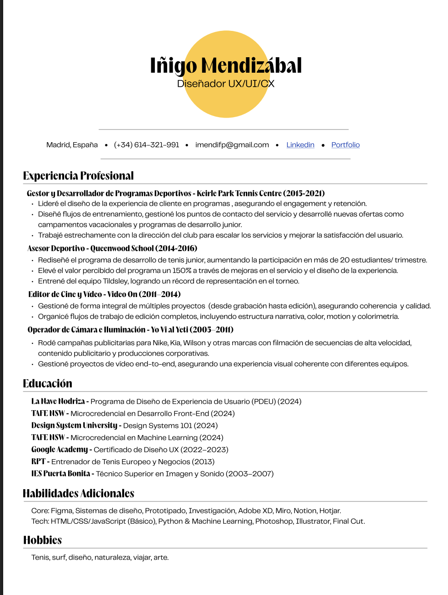
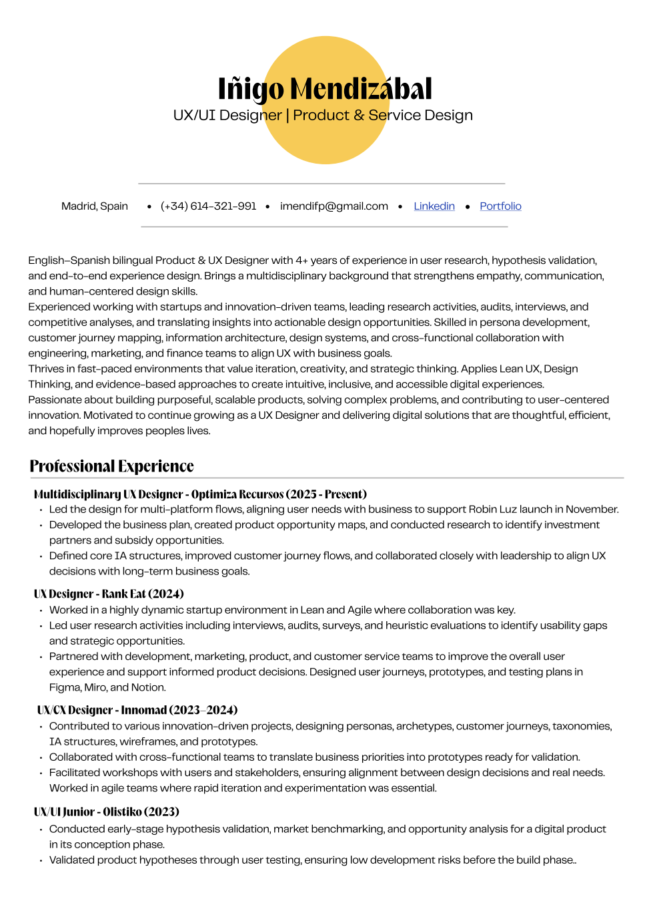
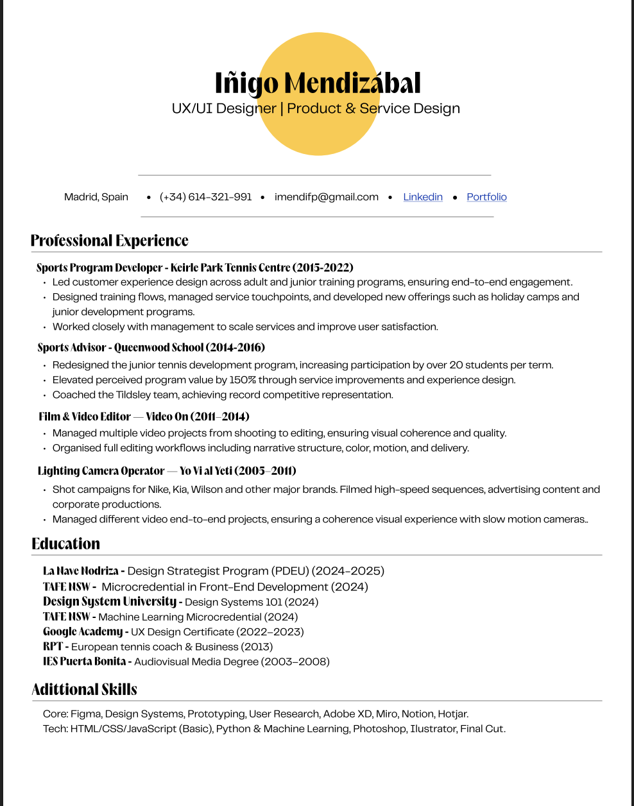
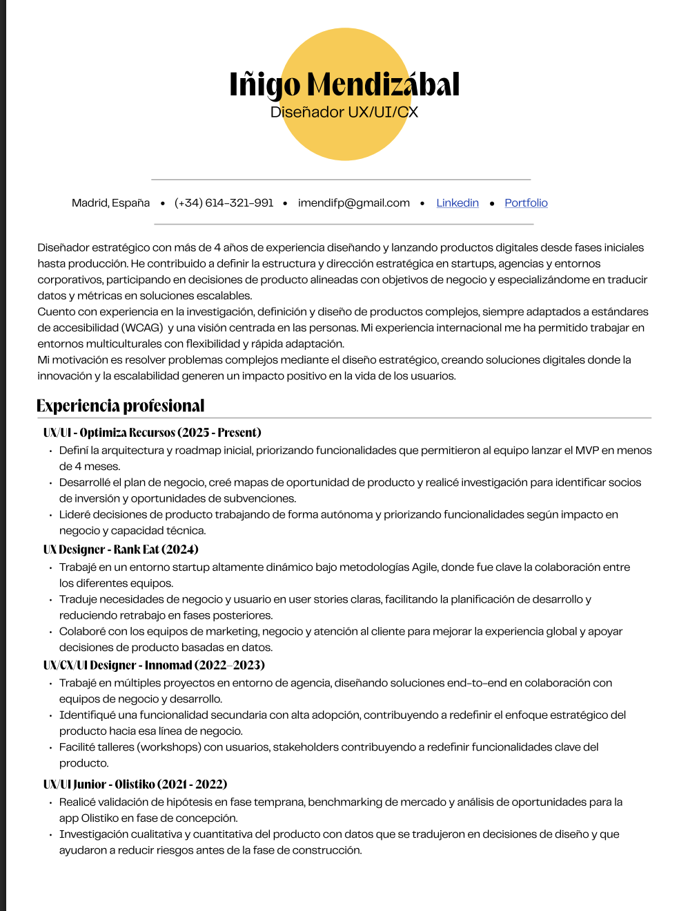
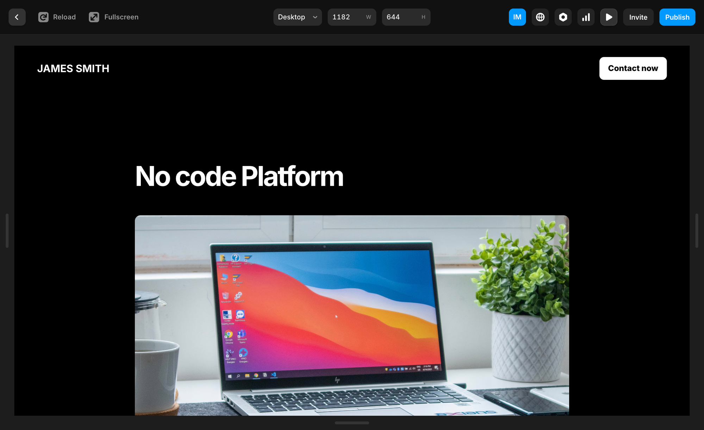

Landing robinluz.com
Una landing que no se diseñó desde el pixel 1. Empezamos con una sesión de estrategia con el CEO y stakeholders para alinear qué comunicar, en qué orden, y para quién. El diseño llegó después.
Antes de abrir Figma
Organizamos una sesión de trabajo con el CEO y los stakeholders clave para definir las priority guidelines: quién es el usuario objetivo, qué mensaje es crítico, qué acción queremos que tome, y qué podemos dejar para después.
El resultado fue una pirámide de contenidos que sirvió de brújula para todo el proceso de diseño posterior. Sin ella, habríamos diseñado una landing bonita sin propósito claro.

Sesión de estrategia — priority guidelines con CEO
De la pirámide a los bloques
La pirámide de contenidos se tradujo en bloques funcionales, cada uno con un objetivo claro. Así evitamos que la landing se convirtiera en un catálogo de features sin narrativa.

Pirámide de contenidos

Bloques de contenido

Detalle de secciones

Wireframes de la landing
Estructura antes de color
Los wireframes tradujeron la arquitectura de contenidos en layout. En esta fase tomamos las decisiones más importantes: dónde va el CTA principal, cuánta información necesita ver el usuario antes de decidir, cómo organizamos la navegación.
También definimos los bloques de app screenshots que el CEO quería incluir para mostrar el producto real, integrando las capturas de la app móvil en el flujo narrativo de la landing.
Evolución hacia producción
Desde los wireframes hasta la versión que entró a producción hubo múltiples iteraciones. Los cambios más significativos vinieron del feedback en sesiones de revisión con el CEO: ajustes de jerarquía, cambios en el hero, y la decisión final sobre el copy del CTA principal.
La paleta de Robin Luz — negro profundo, violeta, índigo — se mantuvo coherente con la app móvil para reforzar la identidad de marca en todos los puntos de contacto.

Evolución del diseño — wireframe a producción